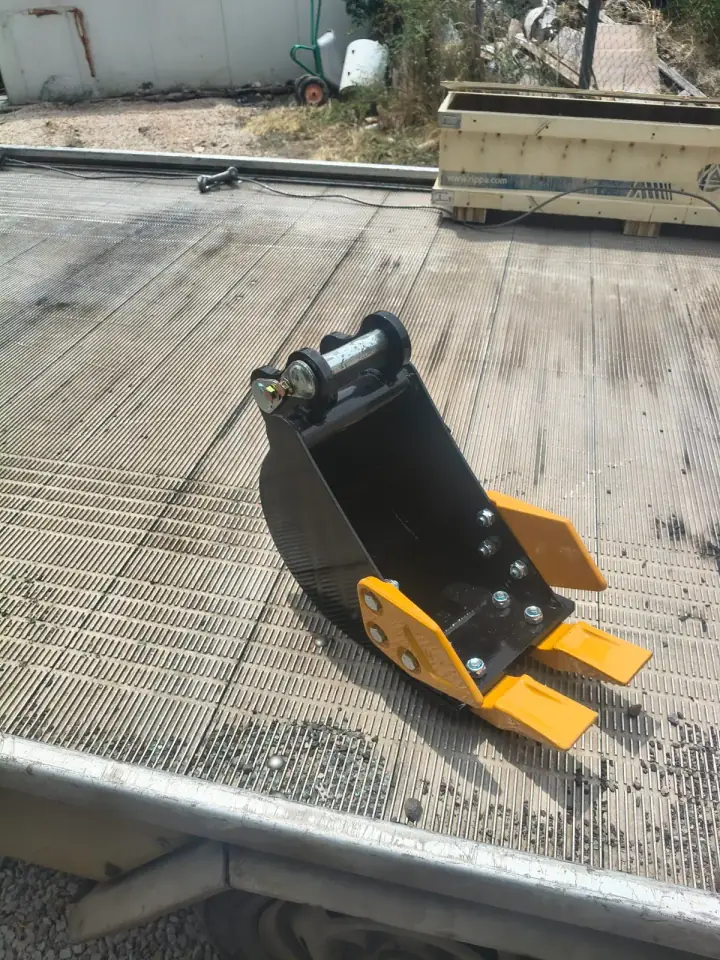
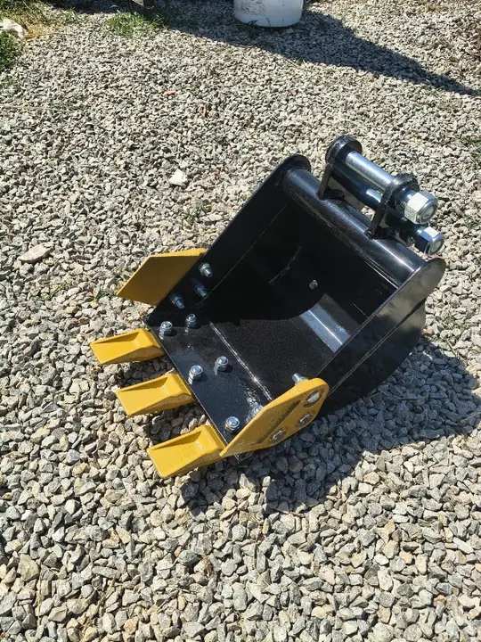
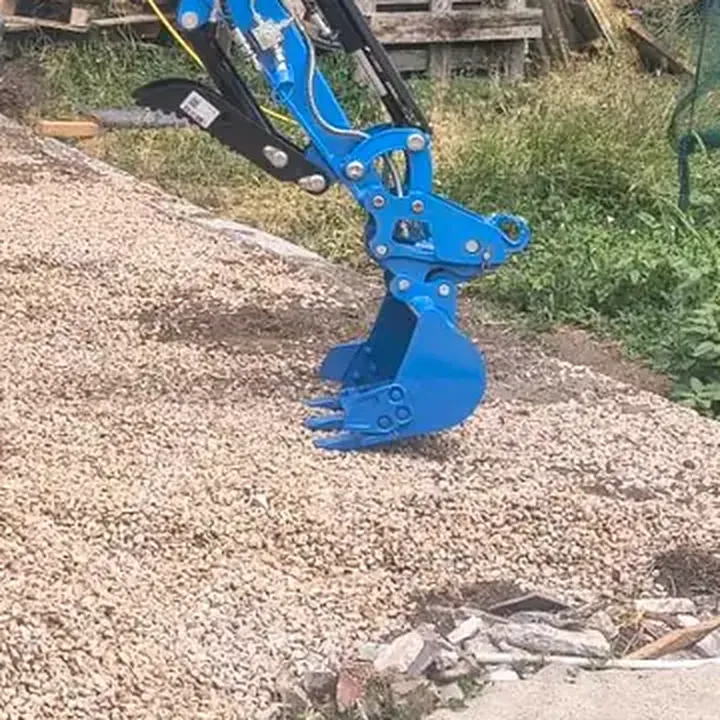
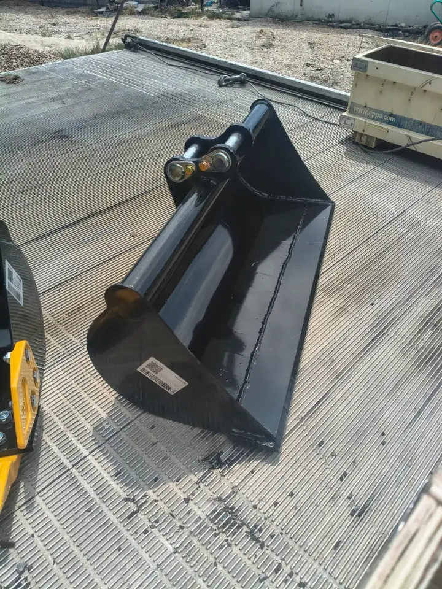

Какъв размер кофа е подходящ за вашия изкоп?
Кратък гид по кофите 20 / 30 / 40 / 80 см — за поливни канали, дренаж, огради и подравняване на двор.
Изборът на кофа зависи от ширината на изкопа и задачата. На Rippa R15 Eco (~1.5 т) работим с четири кофи. Дълбочина до около 1.8 м. Извозване на пръст не предлагаме.
| Кофа | За какво | Полза за вас |
|---|---|---|
| 20 см | Кабели, капково, поливни линии | Минимум извадена пръст — по-щадящо за морава и настилки |
| 30 см | Водопровод, дренаж, тръби около ф110 | Място за тръба и възглавница без излишно широк изкоп |
| 40 см | Ивични основи за огради, по-широки канали | Сила на врязване + ширина за кофраж или бетон |
| 80 см (планировъчна) | Подравняване, засипване, разнасяне на хумус/чакъл | Прав нож — гладък терен, по-бързо от ръчно гребло |
Кофа 20 см — тесни канали
За кабели, капково и поливни линии. Тясната кофа вади по-малко пръст — по-малко засипване и по-малко риск за готова морава. Типична работа: изкопи за поливни системи в двор.
Кофа 30 см — тръби и дренаж
Златната среда за водопровод, дренаж и тръби около ф110. Има място за полагане върху пясъчна възглавница, без да се разкопава целият двор. Вижте и дренаж и ВиК.
Кофа 40 см — огради и по-широки канали
Стандарт за ивична основа на ограда и по-широки канали. На тази машина е основната кофа за копаене в по-твърда почва. Често комбинираме с свредел 150 мм за дупки за колове в една визита — изкоп за ограда.
Кофа 80 см — подравняване
Планировъчна кофа с прав нож (без зъби): подравняване на двор, засипване на канали, разнасяне на хумус или чакъл. Не е за тесен дълбок канал. Повече: подравняване.
Как избираме на обекта
- Твърда / глинеста почва — по-тясна кофа за по-добра сила на врязване.
- Рохкава почва — по-широка кофа може да върви по-бързо.
- На Rippa под ~2 т кофите за копаене са 20 / 30 / 40 см; 80 см е за планиране.




Дупки за ограда или почистване на корени?
Това не е работа на кофата. За дупки за колове и туи ползваме хидравличен свредел 150 мм. За корени, дънери и товарене — хидравличен палец.